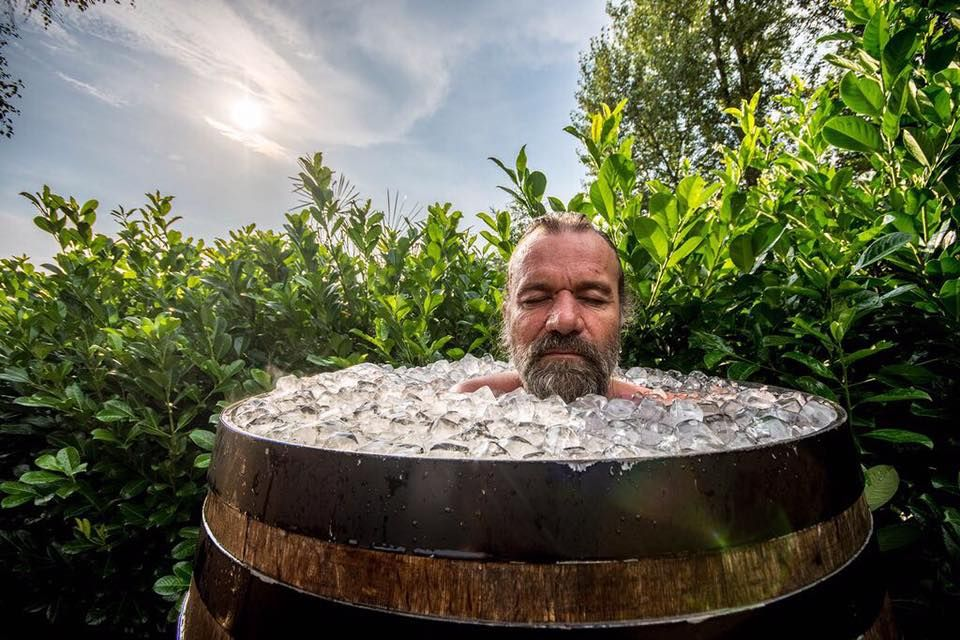

About 'The Iceman'
Wim is changing lives, but also the world of health, mental health and mindset. Big pharma doesn't like it, I guess.
Wim in an icebath
What about him?
- Just breathe
- Easy does it
- Easy fucking does it
Wim's friends
During the Bring the Elephant Home Ic Challenge Wim met some old friends, and made some new friends. Click on the links below to find them on the interwebz.
- Antoinette founded Bring the Elephant Home
- Fallon is a Californian activist living in Chicago, or somewhere cold, for sure. She made the Ice Challenge happen by connecting BtEH & Wim
- Anna runs Dottir Travel, she loves Ice(land)!